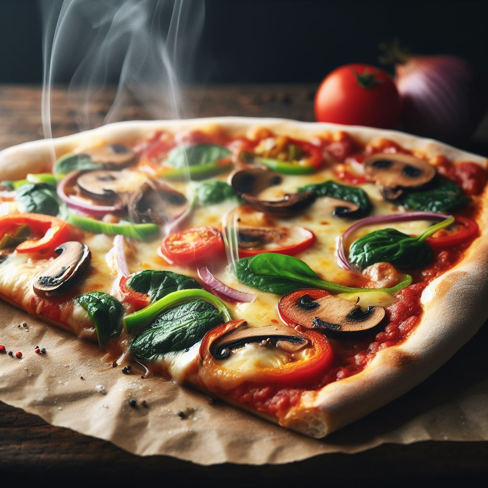

<!DOCTYPE html>
<html lang="tr">
<head>
    <meta charset="UTF-8">
    <meta name="viewport" content="width=device-width, initial-scale=1.0">
    <title>Evde Pizza Tarifi</title>
</head>
</html>
<hr>
<body style="background-color:rgb(156, 221, 140);">
    <nav>
        <a href="index.html">Ana Sayfa</a>
        <a href="margarita.html">Margarita Pizza Tarifi</a>
        <a href="pepperoni.html">Pepperoni Pizza Tarifi</a>
        <a href="vejeteryan.html">Vejetaryen Pizza Tarifi</a>
    </nav>
<hr>
    
    <h1>Vejeteryan Pizza Tarifi</h1>
    <p>4 kişilik | Hazırlama süresi: 30 dakika | Pişirme süresi: 15 dakika</p>
    <h2>Malzemeler</h2>
    <ul>
        <li>1 adet pizza hamuru</li>
        <li>1 su bardağı domates sosu</li>
        <li>1 su bardağı rendelenmiş kaşar peyniri</li>
        <li>1/4 su bardağı rendelenmiş parmesan peyniri</li>
        <li>1/4 su bardağı rendelenmiş mozzarella peyniri</li>
        <li>1/4 su bardağı rendelenmiş beyaz peynir</li>
        <li>1/4 su bardağı rendelenmiş lor peyniri</li>
        <li>1/4 su bardağı rendelenmiş çerkez peyniri</li>
        <li>1/2 su bardağı doğranmış mantar</li>
        <li>1/4 su bardağı doğranmış zeytin</li>
        <li>1/4 su bardağı doğranmış mısır</li>
        <li>1/4 su bardağı doğranmış domates</li>
        <li>1/4 su bardağı doğranmış biber</li>
        <li>1/4 su bardağı doğranmış soğan</li>
        <li>1/4 su bardağı doğranmış brokoli</li>
    </ul>
    <h2>Yapılışı</h2>
    <ol>
        <li>Fırını 200 derecede ısıtın.</li>
        <li>Pizza hamurunu yağlı kağıt serili tepsiye yayın.</li>
        <li>Domates sosunu hamurun üzerine sürün.</li>
        <li>Kaşar, parmesan, mozzarella, beyaz, lor ve çerkez peynirlerini hamurun üzerine serpin.</li>
        <li>Mantar, zeytin, mısır, domates, biber, soğan ve brokoliyi peynirlerin üzerine yerleştirin.</li>
        <li>Pizzayı fırına verin ve 15 dakika pişirin.</li>
        <li>Pizzayı fırından çıkarın ve dilimleyerek servis yapın.</li>
    </ol>
    <hr>
    <footer>
        <p>Evde Pizza Tarifi © 2023</p>
    </footer>
</body>
</html>
